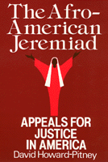

<body bgcolor="#FFFFFF" text="#000000" link="#0000FF" vlink="#CC0000" alink="#CC0000"><center><hr width="350" size="1" align="center" noshade>Analyzing the rhetorical style of black leaders<hr width="350" size="1" align="center" noshade><p><a href="https://cdcshoppingcart.uchicago.edu/Cart/ChicagoBook.aspx?ISBN=9780877226734&&PRESS=temple" target="_top">Buy this book!</a> | <a href="https://cdcshoppingcart.uchicago.edu/Cart/Cart.aspx?PRESS=temple" target="_top">View Cart</a> | <a href="https://cdcshoppingcart.uchicago.edu/Cart/Cart.aspx?PRESS=temple" target="_top">Check Out</a></p><p></p></center><!--none//--><h1>The Afro-American Jeremiad</h1>
<H2>Appeals for Justice in America</H2>
<h3>David Howard-Pitney</h3>
<P>cloth 0-87722-673-3 $58.50, Apr 90, <FONT COLOR=#990033>Out of Stock Unavailable</FONT>
<br>paper 1-56639-086-9 $25.95, Mar 93, <FONT COLOR=#990033>Out of Stock Unavailable</FONT>
<BR> 260 pp
5.5x8.25
</P><BLOCKQUOTE><I>"In these troubled times, this book is a reminder of the power that black Americans exercised in moving toward...the American Dream that each of these leaders so eloquently, if differently, expressed.... I cannot recommend </I>The Afro-American Jeremiad<I> too highly. It should be required reading from the White House to the schools in the poorest backwaters of this country."</I>
<br>&#151<b><I>The Journal of Southern History</I></b><I></I></BLOCKQUOTE>
<p>The American jeremiad is a rhetoric of indignation, expressing deep dissatisfaction and challenging the nation to reform. David Howard-Pitney examines the speeches and writings of Frederick Douglass, Booker T. Washington, Ida B. Wells, W. E. B. Du Bois, Mary McLeod Bethune, Martin Luther King, Jr., and Jesse Jackson to show how black leaders have employed this rhetoric of social prophecy and criticism to create a variant that is specifically Afro-American.
<p>The Afro-American jeremiad has been a leading feature of black protest rhetoric from the antebellum through the modern civil rights era. While Douglass, Du Bois, and King consistently used the pure form, other black leaders have employed elements of the jeremiad to advance distinct social interests and political agendas. After demonstrating how Douglass used this tradition before, during, and after the Civil War, Howard-Pitney contrasts Washington�s emphasis on black self-help with Ida B. Wells�s insistence upon white reform. He discusses Du Bois�s national reform efforts, the language of black New Dealer Mary McLeod Bethune, and King�s civil religious rhetoric. Throughout his analysis the author addresses the ebb and flow of optimism about American promise and progress.
<p>Concluding with a discussion of the continued presence of black jeremiahs such as Jesse Jackson, Howard-Pitney describes how this rhetoric has been most successful in fomenting social-political reform with regard to civil rights and least successful when advocating basic economic change.
<BR>&nbsp;<h2>Reviews</h2>
<p><I>"Howard-Pitney has identified the core beliefs and values that hold the nation together in her civil religion.... By demonstrating how...Afro-Americans have drawn upon the jeremiad to make their case for justice and equality, the author has shown the enduring quality of this idea, which has been embraced and rejected by black leaders at various times."</I>
<br>&#151<b>Robert L. Harris, Jr.</b>, Cornell University
<p><I>"This very fine monograph is significant because it explores one of the few points of leverage that Afro-American spokesmen had in the nineteenth century in attempting to break out of the race�s powerlessness. Very compelling and thought-provoking."</I>
<br>&#151<b>Walter Jackson</b>, North Carolina State University
<p><I>�This study shows how Martin Luther King and other national black leaders have employed social criticism rhetoric and prophecy known as the American Jeremiad. The American jeremiad and the major contributions of African Americans to its development are analysed through an examination of the thought and rhetoric of these prominent figures.� </I>
<br>&#151<b><I>Sage Race Relations Abstracts</I></b>
<BR>&nbsp;<h2>Contents</h2><P>
<p>Acknowledgments
<br>Introduction: Civil Religion and the Anglo-and Afro-American Jeremiads
<br>1. Frederick Douglass's Antebellum Jeremiad against Slavery and Racism
<br>2. The Brief Life of Douglass's "New Nation": From Emancipation-Reconstruction to Returning Declension, 1861-1895
<br>3. The Jeremiad in the Age of Booker T. Washington: Washington versus Ida B. Wells, 1895-1915
<br>4. Great Expectations: W.E.B. Du Bois's Jeremiad in the Progressive Era
<br>5. Mary McLeod Bethune and W.E.B. Du Bois: Rising and Waning Hopes for America at Midcentury
<br>6. Martin Luther King, Jr., and America's Promise in the Second Reconstruction, 1955-1965
<br>7. King's Radical Jeremiad, 1965-1986: American as the "Sick Society"
Conclusion: The Black Jeremiad and the Jackson Phenomenon
<br>Notes
<br>Index
</P><BR>&nbsp;<H2>About the Author(s)</H2>
<P><b>David Howard-Pitney</b> is Professor of History at De Anza College. He has worked at the Martin Luther King, Jr. Papers Project at Stanford University, and during 2000-2002 was a Commissioned Scholar for the Public Influences of African-American Churches Project of Morehouse College. His publications include <i>Martin Luther King, Jr., Malcolm X, and the Civil Rights Struggle of the 1950s and '60s</i>.</P>
<BR><H2>Subject Categories</H2>
<p><A HREF="/tempress/african.html" TARGET="_top">African American Studies</a>
<BR><A HREF="/tempress/mass_media.html" TARGET="_top">Mass Media and Communications</a>
</p>
<p align="center"><a href="https://cdcshoppingcart.uchicago.edu/Cart/ChicagoBook.aspx?ISBN=9780877226734&&PRESS=temple" target="_top">Buy this book!</a> | <a href="https://cdcshoppingcart.uchicago.edu/Cart/Cart.aspx?PRESS=temple" target="_top">View Cart</a> | <a href="https://cdcshoppingcart.uchicago.edu/Cart/Cart.aspx?PRESS=temple" target="_top">Check Out</a></p><p><font face="Arial" size="1"><a href="copyright.html" onMouseOver="window.status='Web Copyright Policy';return true;" onMouseOut="window.status=''" title="Web Copyright Policy">&copy;</a> 2015 <a href="http://www.temple.edu" target="new" onMouseOver="window.status='Link to Temple University home page';return true;" onMouseOut="window.status=''" title="Link to Temple University home page">Temple University</a>. All Rights Reserved. http://www.temple.edu/tempress/titles/637_reg.html</font></p>